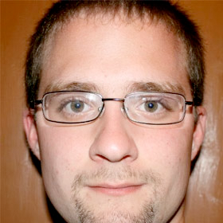

Jeder kann mithelfen!
Mozilla Firefox und unsere anderen Produkte werden von tausenden Freiwilligen und den Angestellten von Mozilla entwickelt. Die Freiwilligen und Angestellten bilden die Gemeinschaft. Diese Gemeinschaft baut einen unabhängigen Browser und treibt technische Fortschritte für das Internet voran. Das Internet ist Bestandteil des Lebens von über einer Milliarde Personen. Bei Mozilla sind wir eine weltweite Gemeinschaft von Technologen, Denkern und Entwicklern, die zusammenarbeiten, um das Internet lebendig und zugänglich zu erhalten, so dass Menschen auf der ganzen Welt informiert zum Web beitragen und es erschaffen können.
Lernen Sie uns kennen!
-
Jan
Webseiten
-
Astrid
Support
-
Sören
Kommunikation
-

Michael
Community
Hallo, ich bin Jan, ein Mozillianer aus Deutschland
2009 brauchte ich Hilfe von der Firefox-Gemeinschaft, die ich auch bekam. Einen Tag später kam ich als Mitglied zurück und begann Anderen zu helfen, wo ich nur konnte. Heute trage ich unter anderem im Bereich Grafikdesign dazu bei, dass Mozilla und die Produkte so aussehen, wie sie es tun. Wenn ich keine Pixel umherschiebe, helfe ich auch bei lokalen Veranstaltungen, um Menschen zu zeigen, wie einfach es ist, Inhalte im Internet zu erstellen. Parallel dazu pflege ich nicht nur mozilla.de, sondern auch jede Art von Website, die überarbeitet werden muss.
Das Tolle ist, dass man nicht nur jeden Tag Mozillianer mit den selben Interessen und Zielen kennenlernt, sondern, dass man generell ständig dazulernt und das Gelernte auf andere Bereiche innerhalb und außerhalb Mozillas anwenden kann. Seien es Web-Technologien oder Prinzipien für ein offenes Internet. Also, mach mit!
Ich helfe derzeit bei:
- mozilla.de
- Design und Webgestaltung
- Veranstaltungen der Gemeinschaft
Hallo, ich bin Astrid (Zitronella), eine Mozillianerin aus Deutschland
Unabhängig von meinem Beruf, im sozialen Bereich, interessiere ich mich seit ca. 2004 kontinuierlich für die Entwicklung von Open Source Programmen und insbesondere für Firefox. Durch ständiges Aneignen von Kenntnissen konnte ich diese bald erfolgreich an andere Menschen weitervermitteln. Seit 2010 beteilige ich mich aktiv in der Gemeinschaft.
Mein Fokus liegt darauf, ganz konkret Menschen in akuten Situationen bei Firefox-Problemen zu helfen. Dabei ist es mir wichtig, ganz individuell auf den Menschen einzugehen und im Einzelfall, auch über das Projekt hinaus, weitreichendere Hilfestellungen und Aufklärung zu geben. Dabei unterstütze ich den Hilfesuchenden auch darin, die Fähigenkeiten in den Grundlagen von Computern und Internet weiterzuentwickeln. Die Firefox-Gemeinschaft im Rücken zu haben, mich mit ihnen auszutauschen und zusammenzuarbeiten ist für mich von enormer Bedeutung und eine Bereicherung.
Hallo, ich bin Sören, ein Mozillianer aus Österreich
Seit 2010 informiere ich über aktuelle Entwicklungen rund um Mozilla. Mein Ziel ist es, anderen Menschen eine verlässliche Quelle über Mozilla zu bieten und all die Informationen einfach und in deutscher Sprache zugänglich zu machen, welche über viele Quellen und oft zunächst nur auf Englisch im Web verteilt sind. Mehr als 300 Artikel pro Jahr veröffentliche ich zu diesem Zweck.
Im Firefox-Support aktiv bin ich seit Ende 2011 und seit 2013 darüber hinaus Administrator des deutschsprachigen Firefox-Forums und für die technischen Aspekte verantwortlich. Ebensfalls seit 2013 bin ich offizieller Mozilla Representative. Im Jahr 2014 habe ich eine Webseite gestartet, welche alle bereits erhältlichen sowie kommenden Geräte mit Firefox OS sowie deren Spezifikationen anzeigt und dadurch für Interessierte vergleichbar macht, ohne dass sich diese alle Informationen von verschiedenen Webseiten zusammensuchen müssen.
Ich helfe derzeit bei:
- Blog
- Deutsches Firefox Forum
- Firefox OS Gerätedokumentation
Hallo, ich bin Michael, ein Mozillianer aus der Schweiz
Ich habe 2008 als Teenager angefangen, Patches zu Firefox beizutragen. Vier Jahre später beschloss ich, offiziell Mozilla Rep zu werden und helfe seitdem beim Aufbau der schweizer Mozilla-Gemeinschaft.
Neben der Organisation von Veranstaltungen der Gemeinschaft in der Schweiz koordiniere ich auch Veranstaltungen in Deutschland und Österreich, was mich zu einem der wenigen Mozillianer macht, der bei Veranstaltungen in drei verschiedenen Ländern hilft – und das alles im Abstand weniger Monate. Mein Ziel ist es jetzt, unsere weltweite Gemeinschaft durch Lokalisierung (Übersetzung), Programmieren und Webmaker-Projekte weiter wachsen zu lassen. Wenn Sie Interesse daran haben, melden Sie sich bitte.
Ich helfe derzeit bei:
- Deutschsprachige Gemeinschaft
- Veranstaltungen der Gemeinschaft
- Mozilla Schweiz
Obenstehende Personen bilden nur eine kleine Auswahl an Freiwilligen, die in der deutschsprachigen Gemeinschaft aktiv sind. Die Gemeinschaft wächst von Monat zu Monat und bildet einen wichtigen Bestandteil von Mozilla. Wir würden uns freuen, wenn wir auch Sie sich in Zukunft in der deutschsprachigen Gemeinschaft engagieren würden.
- 100+ Mailingliste-Leser
- 50+ deutschsprachige Mitwirkende
- 3+ Länder
Möchten Sie mitmachen? So geht’s.
- Wählen Sie aus, was Sie interessiert, und sagen Sie uns, wie Sie gerne helfen würden
- Warten Sie auf eine E-Mail, die Sie mit der Mozilla-Gemeinschaft zusammenbringt
- Erstellen Sie Ihr Mozillianer-Konto und teilen Sie Ihre Beiträge mit der Welt